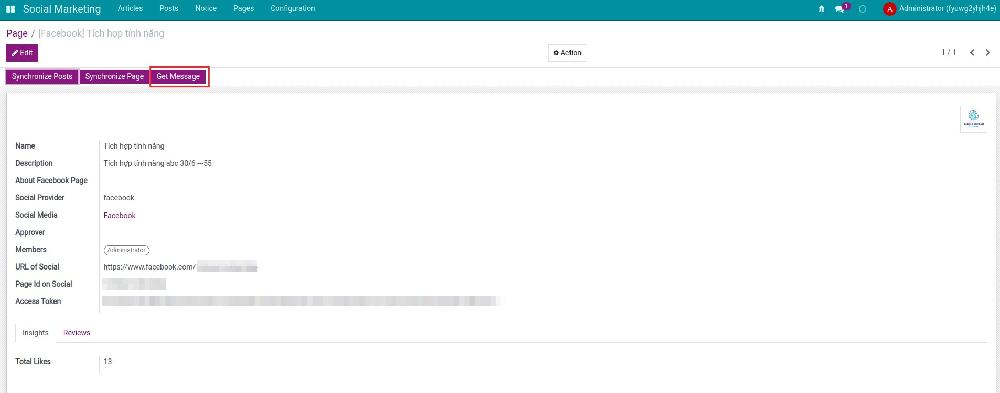
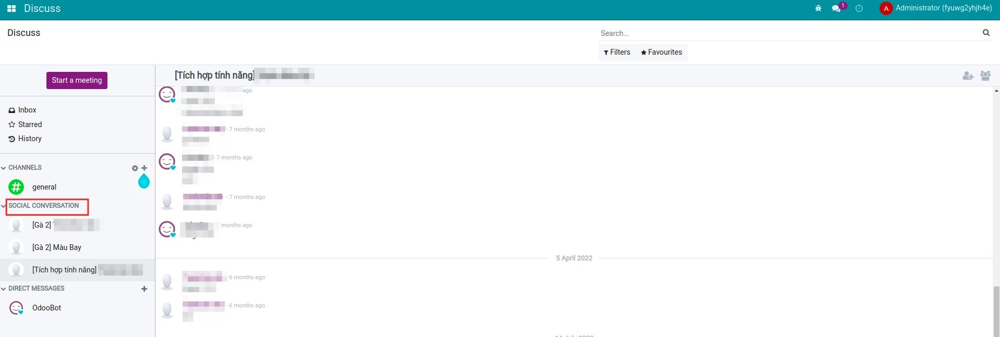
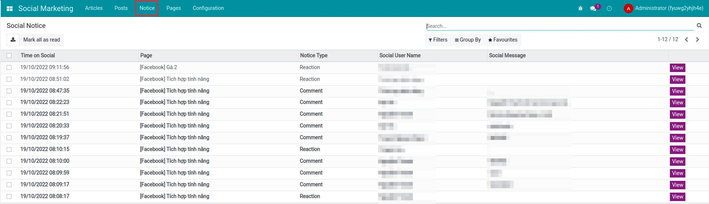
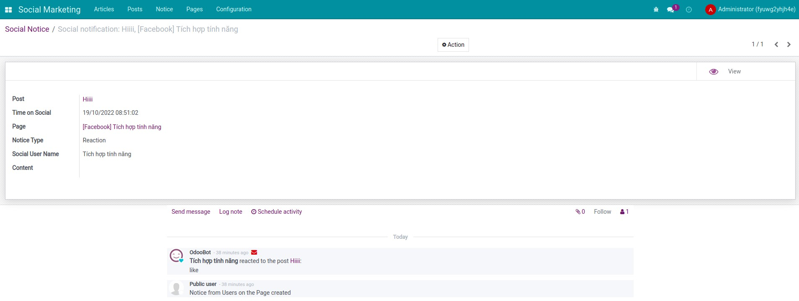

viin_social)
Facebook Pages in Social Marketing
Marketing / Social Marketing — integrate Social Marketing with Facebook
Facebook Social Marketing
Facebook Social Marketing helps you manage Facebook content directly from the Social Marketing app. The module lets you create, preview, and publish posts, monitor interactions, and respond to messages and comments without leaving the system.
Demo: Facebook Social Marketing (YouTube). Requires the Social Marketing base app (viin_social).

Key features
The list below summarises what you can do in the app. It extends the Social Marketing base app (viin_social) with Facebook-specific flows.
Facebook content management
Manage all Facebook content in an intuitive interface.
Content creation tools
Attach files, preview and publish posts.
Post progress tracking
Manage post status (Draft, Confirmed, Canceled) and assignees.
Content editing and interaction
Edit, share, and delete posts directly in the app. Reply to, delete, and hide comments. Receive and respond to Facebook messages directly.
Data synchronization
Sync posts and notifications from Facebook into the system.
Benefits
Outcomes teams typically look for when centralising Facebook in Odoo.
Time saving
Helps you manage Facebook content quickly and efficiently.
Enhanced interaction performance
Supports message and comment responses within the system.
Strict content control
Synchronizes and controls content on a single platform.
Reduced risk of loss of control
Helps businesses maintain accurate and consistent content.
Facebook Social Marketing overview
viin_social for shared social models and UI.viin_social) first. This app extends media, settings, pages, articles, and posts for Facebook.pages_show_list, pages_read_engagement, pages_manage_posts, pages_read_user_content, pages_manage_engagement, pages_manage_metadata, and optionally pages_messaging for Messenger.Screenshots
Screenshots walk through the main screens in the English Odoo interface.
-
1
Fetch Page messages
Bring Messenger conversations into Odoo when messaging permissions are granted on your Meta app.

-
2
Message list
Work the inbox alongside other social operations without leaving the backend.

-
3
Interaction notifications
Stay aware of likes, comments, and other Page signals synced into notices.

-
4
Notice detail
Open structured notice payloads that map back to posts and Pages for faster triage.

Video and online sandboxes
Watch the module video, then open a Viindoo demo where Social Marketing and Facebook Social Marketing are installed so menus and OAuth match production.
Pre-sales
Share Odoo edition, expected Page volume, whether you need Messenger ingestion, and any coexistence with Odoo standard Social Marketing.
sales@viindoo.comSupport
Include order reference, Social Marketing and Facebook Social Marketing app versions, Meta app id, failing Graph API responses, and steps to reproduce token or publishing errors.
apps.support@viindoo.comTechnical requirement
Before using this module, verify the following Facebook permissions on your Meta app:
pages_show_list,pages_read_engagement,pages_manage_posts,pages_read_user_content,pages_manage_engagement,pages_manage_metadatapages_messaging(optional)- Odoo 17 with Social Marketing installed and configured; valid Meta developer app and HTTPS callbacks for OAuth in production.
After installation, connect Facebook from settings, then use the Social Marketing menus to authorise Pages and manage content as in the screenshots above.
Changes log
- v0.2 - Documentation and store description refreshed.
- v0.1 - Initial Facebook integration for Viindoo Social Marketing.
Target users
Typical roles that get the most value from this app.
Businesses using Facebook
Suitable for businesses that want to promote their brand.
Marketing teams
Optimize social media content management.
Campaign managers
Track Facebook campaign effectiveness more easily.
Install together with
Facebook Social Marketing always ships beside the technical base. Add other connectors when you need additional networks.
Social Marketing (base)
Shared models, views, metrics, and security that every Viindoo social connector extends.
View on AppsLinkedIn Social Marketing
Optional second connector that reuses the same article and post flows for LinkedIn assets.
View on Apps